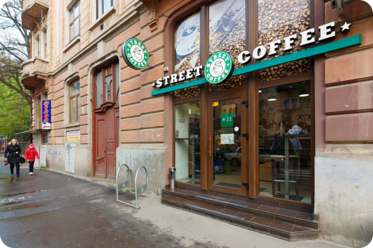

Street Coffee – це унікальна мережа кав’ярень, що поєднує в одному закладі кав’ярню та магазин. В гостях у нас ви можете спробувати не тільки смачну каву та насолодитися свіжими десертами, а також відчути позитивну атмосферу, яка надихатиме Вас протягом дня. Головна мета мережі Street Coffee – познайомити наше місто з європейським стилем кав’ярень. Важливо дати змогу кожній людині частувати каву не тільки в дорогому ресторані, в офісі чи вдома, а й на вулицях міста.
Ласкаво просимо на каву! Street Coffee - це мережа сучасних європейських кав'ярень формату cafeé & shop. Ми готуємо неперевершену каву і щиро радіємо всім бажаючим її скуштувати. Ми знаємо, що кава, спожита в приємній компанії і затишній атмосфері завжди смачніша. Саме тому ми дбаємо про те, щоб кожен заклад Street Coffee сприяв комфортному відпочинку. Street Coffee - це кава твоєї вулиці.